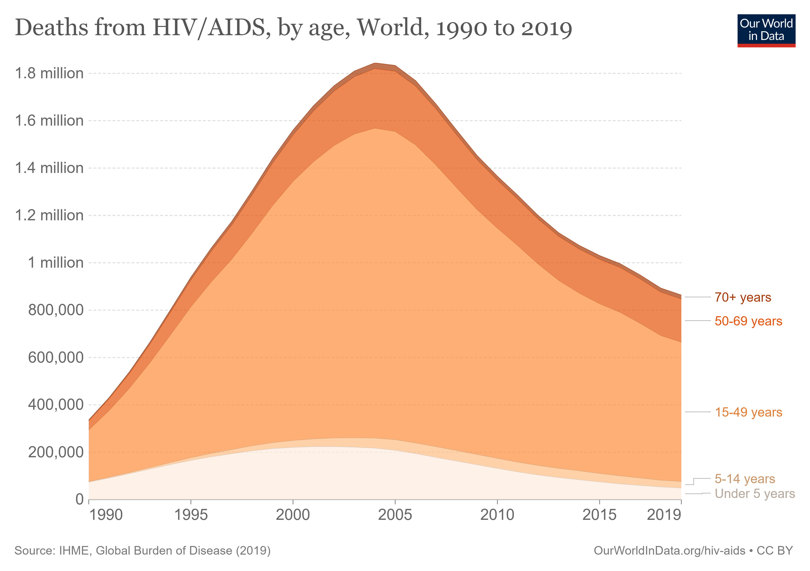
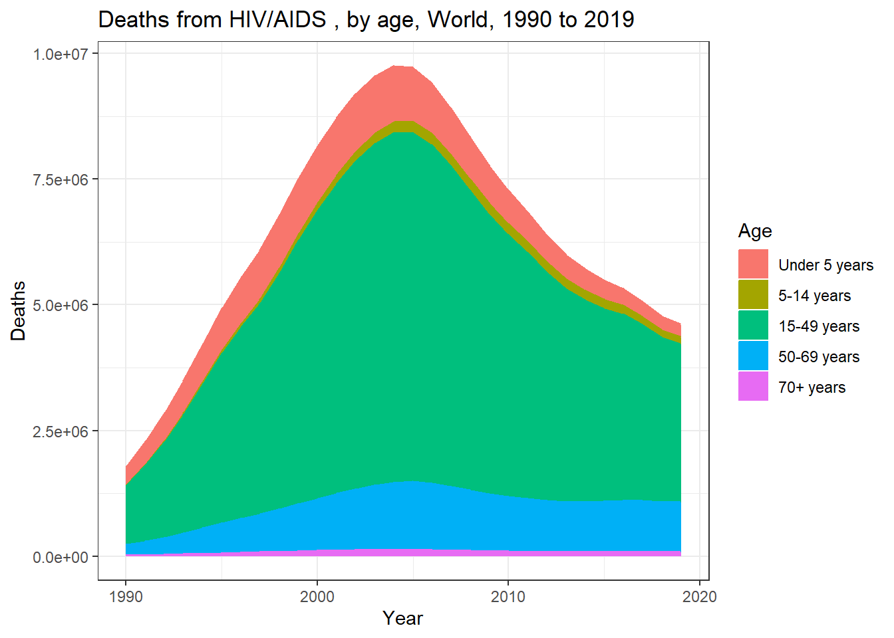
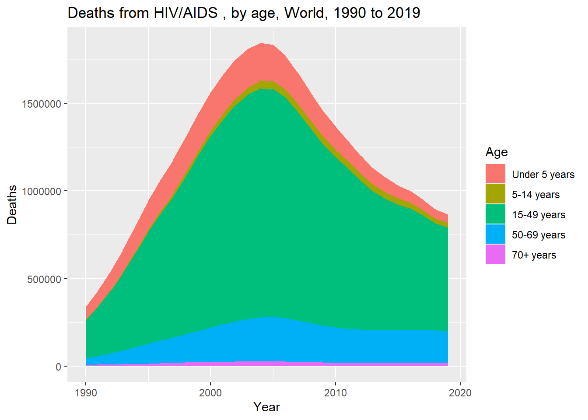
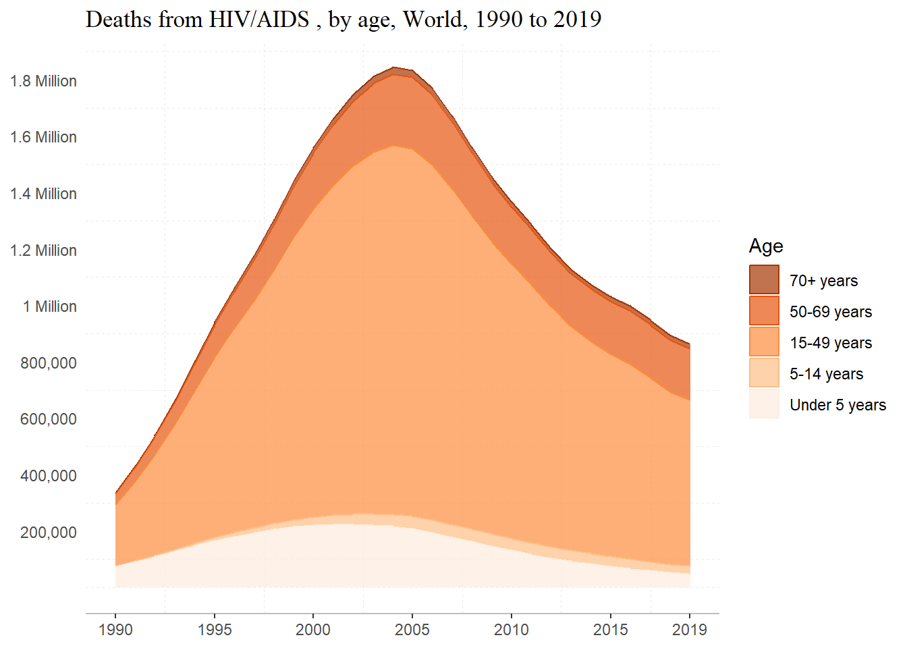
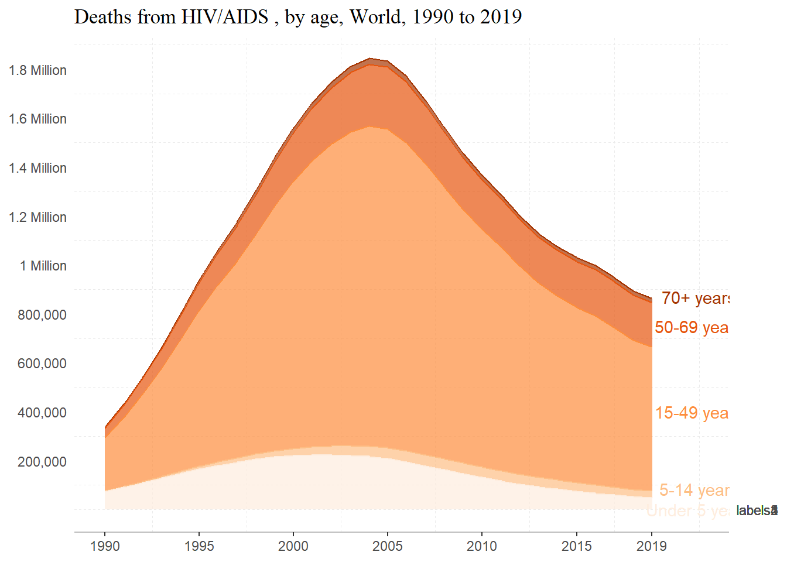

library(tidyverse)
library(here)
here()[1] "C:/Users/Hayley/Desktop/MADA2023/hayleyhemme-MADA-portfolio"[1] "C:/Users/Hayley/Desktop/MADA2023/hayleyhemme-MADA-portfolio"The plot we’ll be trying to replicate is from Our World in Data.

Rows: 6,840
Columns: 8
$ Entity <chr> "Afghanist…
$ Code <chr> "AFG", "AF…
$ Year <dbl> 1990, 1991…
$ `Deaths - HIV/AIDS - Sex: Both - Age: 70+ years (Number)` <dbl> 1, 1, 2, 2…
$ `Deaths - HIV/AIDS - Sex: Both - Age: 50-69 years (Number)` <dbl> 7, 8, 9, 1…
$ `Deaths - HIV/AIDS - Sex: Both - Age: 15-49 years (Number)` <dbl> 15, 19, 24…
$ `Deaths - HIV/AIDS - Sex: Both - Age: 5-14 years (Number)` <dbl> 0, 0, 0, 1…
$ `Deaths - HIV/AIDS - Sex: Both - Age: Under 5 (Number)` <dbl> 10, 12, 13…Let’s group by year and find the sum of deaths for each year in each age group.
year_sums_70 <- HIV_GBD %>% group_by(Year) %>%
summarize(`70+ years` = sum(`Deaths - HIV/AIDS - Sex: Both - Age: 70+ years (Number)`))
year_sums_50 <- HIV_GBD %>% group_by(Year) %>%
summarize(`50-69 years` = sum(`Deaths - HIV/AIDS - Sex: Both - Age: 50-69 years (Number)`))
year_sums_15 <- HIV_GBD %>% group_by(Year) %>% summarize(`15-49 years` = sum(`Deaths - HIV/AIDS - Sex: Both - Age: 15-49 years (Number)`))
year_sums_5 <- HIV_GBD %>% group_by(Year) %>%
summarize(`5-14 years` = sum(`Deaths - HIV/AIDS - Sex: Both - Age: 5-14 years (Number)`))
year_sums_0 <- HIV_GBD %>% group_by(Year) %>%
summarize(`Under 5 years` = sum(`Deaths - HIV/AIDS - Sex: Both - Age: Under 5 (Number)`)) Let’s join the datasets and check to see how things are looking.
year_sums <-list(year_sums_70, year_sums_50, year_sums_15, year_sums_5, year_sums_0)
year_sums <- year_sums %>% reduce(full_join)Joining with `by = join_by(Year)`
Joining with `by = join_by(Year)`
Joining with `by = join_by(Year)`
Joining with `by = join_by(Year)`Rows: 30
Columns: 6
$ Year <dbl> 1990, 1991, 1992, 1993, 1994, 1995, 1996, 1997, 1998, …
$ `70+ years` <dbl> 20399, 26573, 33797, 41998, 51362, 61170, 71366, 80974…
$ `50-69 years` <dbl> 206148, 265170, 334139, 414419, 505039, 596589, 676115…
$ `15-49 years` <dbl> 1169847, 1507786, 1901048, 2355302, 2857896, 3371592, …
$ `5-14 years` <dbl> 14380, 19461, 26079, 35140, 46940, 60284, 75037, 90767…
$ `Under 5 years` <dbl> 371472, 459127, 553263, 651461, 747455, 839116, 919408…Nice! Let’s make things a bit easier to plot by pivoting the data into long format.
We’ll make age group a factor…
Now let’s plot it
sums_long %>% ggplot(aes(x= Year, y = Deaths, color=Age, fill = Age)) +
geom_area() + labs(title = "Deaths from HIV/AIDS , by age, World, 1990 to 2019") +
theme_bw()
Wait! Something is not looking right with the data… our counts are significantly higher than those shown in the original plot. Let’s see if we find out why… Let’s load ‘naniar’ to see if there is anything unexpected about the data.
It looks like the column ‘Entity’ contains data for both countries and continents! Let’s try to correct this by dropping observations missing a country code.
# A tibble: 30 × 8
# Groups: Year [30]
Entity Code Year Deaths - HIV/AIDS - S…¹ Death…² Death…³ Death…⁴ Death…⁵
<chr> <chr> <dbl> <dbl> <dbl> <dbl> <dbl> <dbl>
1 World OWID_WRL 1990 3954 38533 217774 2712 73413
2 World OWID_WRL 1991 5152 49785 281693 3706 90819
3 World OWID_WRL 1992 6567 63068 356532 5013 109445
4 World OWID_WRL 1993 8175 78513 442911 6782 128770
5 World OWID_WRL 1994 9998 95881 538488 9084 147553
6 World OWID_WRL 1995 11907 113569 636910 11721 165293
7 World OWID_WRL 1996 13880 129592 723923 14650 180613
8 World OWID_WRL 1997 15741 144713 803647 17796 193410
9 World OWID_WRL 1998 17651 161922 898187 21356 205780
10 World OWID_WRL 1999 19473 179766 1001519 25126 215227
# … with 20 more rows, and abbreviated variable names
# ¹`Deaths - HIV/AIDS - Sex: Both - Age: 70+ years (Number)`,
# ²`Deaths - HIV/AIDS - Sex: Both - Age: 50-69 years (Number)`,
# ³`Deaths - HIV/AIDS - Sex: Both - Age: 15-49 years (Number)`,
# ⁴`Deaths - HIV/AIDS - Sex: Both - Age: 5-14 years (Number)`,
# ⁵`Deaths - HIV/AIDS - Sex: Both - Age: Under 5 (Number)`That explains it! Things were getting counted twice. Let’s making new dataframe where containing only observations for the ‘World’.
Re-running the previous code…
world70 <- world %>% group_by(Year) %>%
summarize(`70+ years` = sum(`Deaths - HIV/AIDS - Sex: Both - Age: 70+ years (Number)`))
world50 <- world %>% group_by(Year) %>%
summarize(`50-69 years` = sum(`Deaths - HIV/AIDS - Sex: Both - Age: 50-69 years (Number)`))
world15 <- world %>% group_by(Year) %>%
summarize(`15-49 years` = sum(`Deaths - HIV/AIDS - Sex: Both - Age: 15-49 years (Number)`))
world5 <- world %>% group_by(Year) %>%
summarize(`5-14 years` = sum(`Deaths - HIV/AIDS - Sex: Both - Age: 5-14 years (Number)`))
world0 <- world %>% group_by(Year) %>%
summarize(`Under 5 years` = sum(`Deaths - HIV/AIDS - Sex: Both - Age: Under 5 (Number)`))
world <- list(world70, world50, world15, world5, world0)
world <- world %>% reduce(full_join)Joining with `by = join_by(Year)`
Joining with `by = join_by(Year)`
Joining with `by = join_by(Year)`
Joining with `by = join_by(Year)`world_long %>% ggplot(aes(x= Year, y = Deaths, color=Age, fill = Age)) +
geom_area() + labs(title = "Deaths from HIV/AIDS , by age, World, 1990 to 2019")
Let’s try to better match the original plot. We’ll first reverse the order of the age groups
Then we’ll load some useful packages. We’ll load ‘scales’ so that we can add ‘Million’ to the plot and RColorBrewer.
plot <- world_long %>% ggplot(aes(x= Year, y = Deaths, color = Age, fill = Age)) +
geom_area(alpha = 0.7) +
labs(title = "Deaths from HIV/AIDS , by age, World, 1990 to 2019") +
theme_bw() + scale_fill_brewer(palette = "Oranges",
direction = -1) + scale_color_brewer(palette = "Oranges", direction = -1) +
theme(plot.title = element_text(family = "serif")) +
theme(axis.title.x=element_blank(), axis.title.y=
element_blank(), axis.ticks.y = element_blank()) +
scale_x_continuous(breaks=c(1990, 1995, 2000, 2005, 2010, 2015, 2019)) +
scale_y_continuous(breaks=c(2e5, 4e5, 6e5, 8e5, 1e6, 1.2e6, 1.4e6, 1.6e6, 1.8e6),
labels = c("200,000","400,000","600,000","800,000" , "1 Million", "1.2 Million",
"1.4 Million", "1.6 Million", "1.8 Million")) +
theme(panel.grid.major = element_blank(), panel.grid.minor = element_line(
linetype = "dashed"),
panel.border = element_blank(), axis.line.x = element_line(color = "gray"))
plot
Not exactly perfect, but we’re getting pretty close!
About the code– alpha is used to the change transparency; I reversed the order of colors in the scale_x_brewer by using direction = -1; I manually specified my breaks for both axes, and add a label to the y axis. I removed major grid-lines and the border around the plot using theme and element blank, and changed the line type of the minor grid-lines, made the x axis line gray.
Some websites I referred to were:
ggplot2 Reference and Examples (Part 2) - Colours
Let’s try to directly label the age groups to the plot to better match the original. First, we’ll need to subset the data to just the last observation for x.
Let’s also make a new vector containing the age groups.
Let’s see how this works…
plot + geom_text(data = w_19, aes(x = 2021.5, y = c(8.7e5, 7.5e5, 4e5, 8.5e4, 100), label = Age),
alpha= 2) + theme(legend.position = "none") +
scale_y_continuous(breaks=c(2e5, 4e5, 6e5, 8e5, 1e6, 1.2e6, 1.4e6, 1.6e6, 1.8e6),
labels = c("200,000","400,000","600,000","800,000" , "1 Million", "1.2 Million",
"1.4 Million", "1.6 Million", "1.8 Million"),
sec.axis = sec_axis(~ ., breaks = c(8.7e5, 7.5e5, 4e5, 8.5e4, 100, labels = ag)))Scale for y is already present.
Adding another scale for y, which will replace the existing scale.
Not how I hoped, but I think that I’m on the right track… Some things that I definitely want to work on are making the ‘Under 5 Years’ label more visible and adding direct labels onto the plot.
Something to note about this is that when I called scale_y_continuous, it overwrote the previous y scale with labels that I had specified. To get around this, I added that part again and it worked well. Notice the warning message.